Htop-sovellus ja mikä palvelu käyttää eniten suoritinta
Kun palveluita tarkistellaan htopissa ja laitoin järjestyksen CPU% mukaisesti, niin nähdään, että eniten suoritinta tällä hetkellä käytti Cinnamon-työpöytäympäristö, VirtualBoxin-työkalu, Linux Mintin report-tray -ohjelma ja htop-ohjelma.
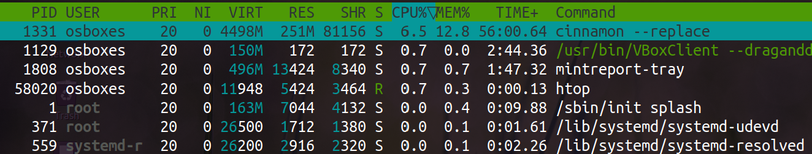
Mikä palvelu käyttää eniten muistia?
Eniten muistiä käytti firefox-ohjelma.
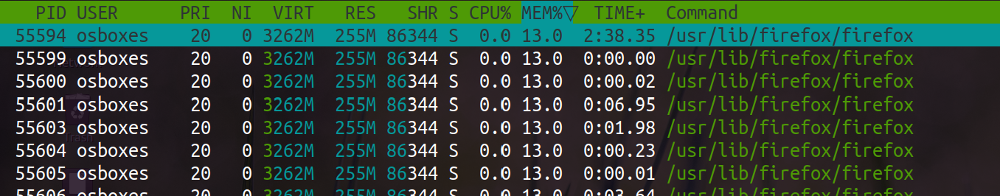
Kuinka pitkään tietokone on ollut käynnissä
Tietokone on ollut käynnissä 1p 1h 34min ja 10s.
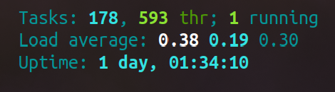
Kuinka paljon muistia on käytössä yhteensä ja mikä on kokonaismäärä
Omassa virtuaali Linux Mintissä on kokonaismuistia 1.92G ja käytössä siitä on 872M.
Firefox-prosessi
Hain firefoxia Fn + F3 -näppäinyhdistelmällä, koska pelkkä F3 oli isäntäkoneen käytössä, niin piti lisätä myös Fn-näppäin komentoon. tämän jälkeen hakeminen oli helppoa. Kun olin hakenut ohjelman, niin ohjelman lopettaminen onnistui Fn+F9 näppäinyhdistelmällä.
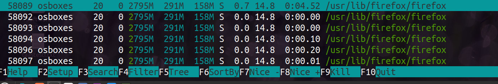
Lostat-sovellus: kuinka paljon levylle kirjoitettu ja kuinka paljon dataa luettu
Sda-levylle on kirjoitettu yhteensä 41524336kB edellisen käynnistyksen jälkeen ja dataa levyltä on luettu 51164231kB verran. Sr0-laitteella ei ole mitään, 1kB luettu jossain vaiheessa. SDA-levystä on mahdollista hakea eri osien tietoja eriteltynä.
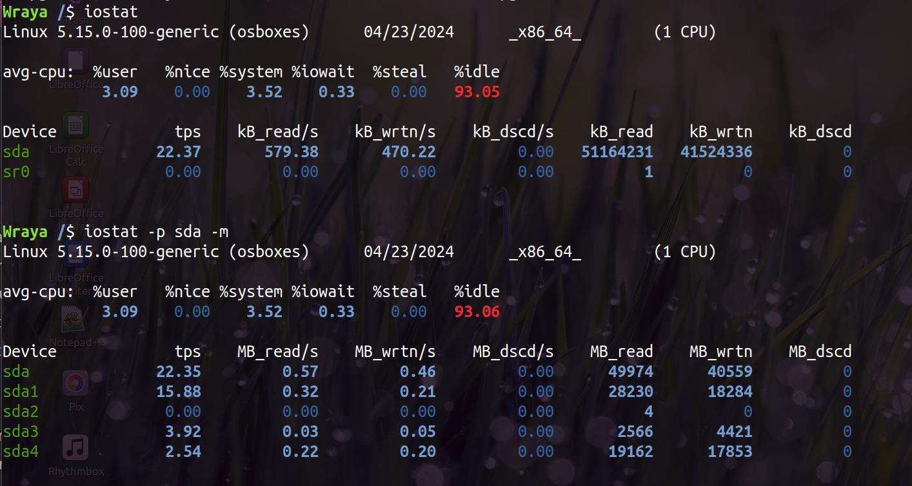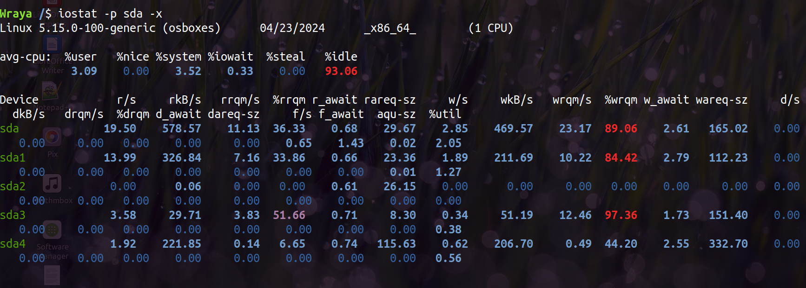
Koneen keskimääräinen ulospäin menevä liikenne
nload-komento hakee verkkoliikenteen keskimääräisen, minimi ja maksimi nopeuden sekä kokonaismäärän niin saapuvan kuin lähtevän liikenteen osalta.
Omalla koneella ulospäin menevän liikenteen keskimääräinen nopeus oli 24 bittisä sekunnissa verkkolaitteella enp0s3 ja verkkolaitteella keskimääräinen nopeus on 0.00 bittiä, koska sitä kautta ei juurikaan ole mitään liikennettä menossa kuvanottohetkellä.
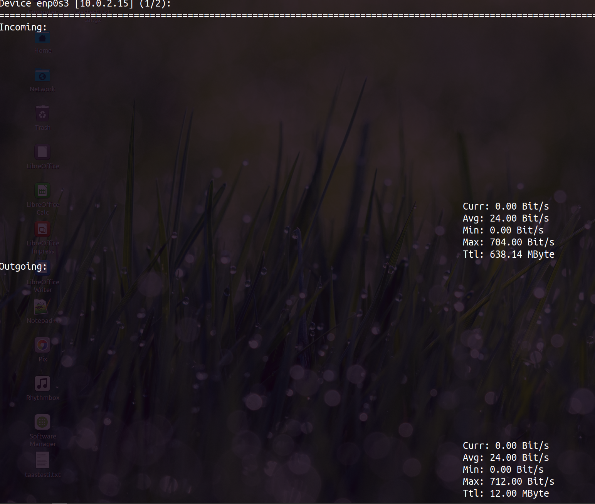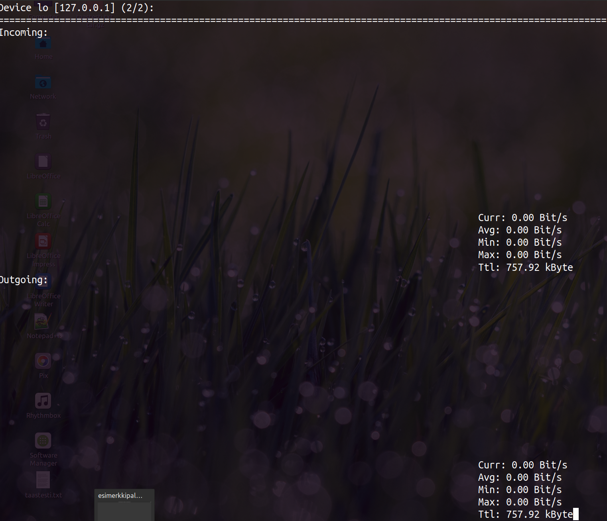
Kuinka paljon kone on ladannut dataa yhteensä
Nload-komennolla haettujen tietojen mukaan kone olisi ladannut dataa yhteensä 638MB + muutama 757kB toisella verkkolaitteella.
Ifconfig-komennolla vaikuttaisi olevan samoissa lukemissa. enp0s3-laitteella on vastaanotettu 496503 pakettia (671MB) ja lo-laitteella 5701-pkaettia (803.3kB)
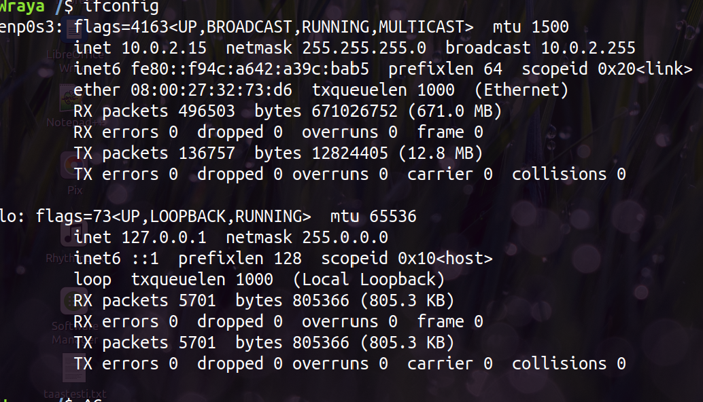
Koneen lokaali IP-osoite
Ylläolevassa ifconfig-kuvassa IP-osoite näkyy inet kohdassa, eli enp0s3-laitteella ip-osoite on 10.0.2.15
Testattu myös IP-komento ja samoilta näyttää.
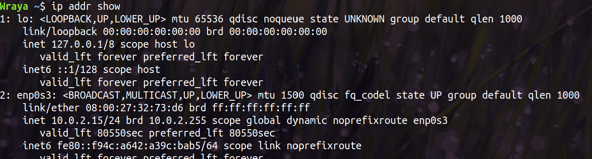
Toimiiko yhteys www.laurea.fi ja mikä IP-osoite vastaa osoitteesta
Yhteys www.laurea.fi-osoitteeseen toimii ja sieltä vastataan IP-osoitteesta 20.76.16.34.
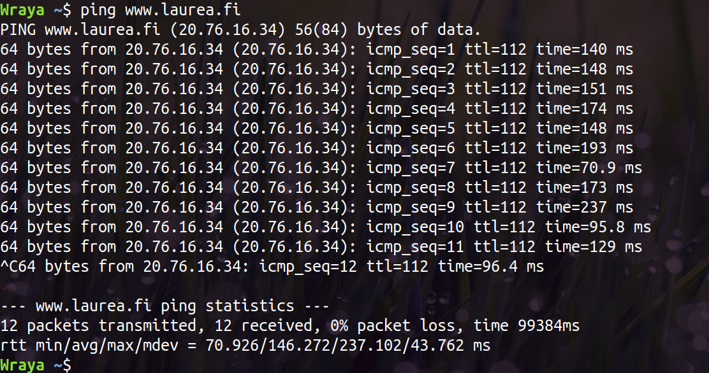
Kuinka monta reititintä on matkalla koneesta osoitteeseen www.laurea.fi
Traceroute-komennon perusteella matkalla olisi 7 reitintä ja mtr-komennon perusteella huomattavasti enemmän.